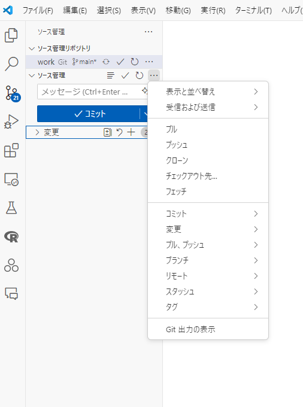
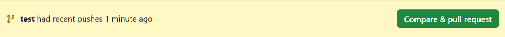

はじめに
以前 VSCode を用いた R 環境の構築方法についてご紹介しました。
その中で GitHub についても触れましたが、今回は VSCode で GitHub を使った作業の流れを詳しく紹介します。
基本的に共同研究を想定していますが、個人で使う場合も同様の流れで作業を進めることができます。
具体的な違いとして、個人作業の場合はブランチを作成したりしなくてもよいと思いますが、共同研究の場合はブランチを作成して作業を進めることが一般的です。
事前準備
こちらの記事の手順は踏んでいるとします。
GitHub アカウントを作成している
VSCode で GitHub にログインする
コラボレーターとして登録する
- 招待の詳細については記事をご覧ください。
ワークフロー
1. リポジトリをクローンする
VSCode を開き、WSL に接続
画面左のアイコンで上から3つ目の「ソース管理」を選択
「リポジトリを複製」、「GitHub から複製」を順に選択
クローンしたいリポジトリを選択しOK をクリック1
- リポジトリが表示されない場合は「ユーザー名/リポジトリ名」の書き方でクローンできます。
クローンするディレクトリを選択
- 特に理由がなければそのまま OK をクリックして下さい。
クローンされる
自動でクローンしたリポジトリが開かれます。
開発コンテナを使用する場合は「開発コンテナで再度開く」と出るので、選択してください。
2. ブランチを作成する
作業ブランチを作成します。デフォルトでは main ブランチになっているので、作業ブランチを作成して作業を進めます。
ブランチは、イメージで言うと「自分の作業用のコピー」です。そっくりそのままファイル等をコピーして作業を行い、完成したら main にくっつけてあげるという感じです。
main ブランチは基本的に完成品を置いておくイメージなので、各自でブランチを作成して作業を進めてください。
画面左下の「main」をクリック
「新しいブランチを作成」を選択
ブランチ名を入力し、Enter キーを押す
ブランチ名は、作業内容がわかるように命名するとよいと思います。
しかし何でも大丈夫です。
ブランチが作成される
- 画面左下に作成したブランチ名が表示されます。
これでブランチが作成されました。作業を進めていきましょう。
3. ファイルを編集する
作業を進めます。コードを書いたりデータを追加したり、何らかの作業が行われたとします。
4. 変更をコミットする
作業が終わったら、変更をコミットします。
画面左のアイコンで上から3つ目の「ソース管理」を選択
コミットするファイルを選択
カーソルをファイルに当てると「+」が表示されるので、クリックしてステージングします。
すべてのファイルをステージングする場合は「変更」の右側にある「+」をクリックすれば OK です。
コミットメッセージを入力
コミットメッセージは、変更内容がわかるように簡潔に書くとよいと思います。
例:
Add new data
「✓コミット」をクリック
- コミットが完了します。
5. プッシュする
コミットした内容をリモートリポジトリに反映させます。
「ソース管理」の右にある「…」をクリック
- カーソルを当てると出てきます。
「プッシュ」を選択
ブランチを公開するか聞かれたら、OK をクリックしてください。
プッシュが完了します。

これでリモートリポジトリに変更が反映されました。
コミットしてすぐプッシュしたい場合は、コミットメッセージを入力した後に「✓コミット」の右側にある下矢印から「コミットしてプッシュ」を選択することで一括で行えます。
6. プルリクエストを作成する
作業が終わったら、プルリクエストを作成します。
現段階では、自分のブランチに反映させただけなので、これを main ブランチに反映させる必要があります。
プルリクエストを作成する理由は、他の人に自分の作業内容を確認してもらうためです。
プルリクエストを作成することで、他の人が自分の作業内容を確認し、問題がなければ main ブランチに反映させることができます。
もし全員が main ブランチに直接コミットしてしまうと、他の人の作業とコンフリクトする場合があったり、誤って動かないコードで上書きされてしまったりなど、問題が発生する可能性があります。
そのため、プルリクエストを作成して他の人に確認してもらいながら、問題がなければ main ブランチに反映させるという手順を踏むことが一般的です。
GitHub にアクセスし、リポジトリを開く
「Compare & pull request」を選択
- 以下のようなバナーが表示されるので、クリックしてください。

プルリクエストの内容を入力
「Add a title」にはコミットメッセージが入力されていると思います。
「Add a description」には、必要に応じて作業内容や変更点などを詳しく書くとよいと思います。
「Create pull request」をクリック
- プルリクエストが作成されます。
これでプルリクエストが作成されました。他の人に確認してもらいましょう。
7. プルリクエストをマージする
プルリクエストを作成したら、他の人に確認してもらい、問題がなければマージします。
リポジトリのページにアクセスし、「Pull requests」を開く
リクエストを選択して開く
問題がなければ「Merge pull request」をクリック
- 問題ない場合「This branch has no conflicts with the base branch」と表示されます。

「Confirm merge」をクリック
- マージが完了します。
8. ブランチを削除する
プルリクエストがマージされたら、作業ブランチを削除します。ちなみにブランチは作業ごとに新しいものを作り、プルリクエストがマージされたら削除するという流れが推奨されるようです。
VSCode でリポジトリを開く
画面左側のアイコンから「ソース管理」を選択
「ソース管理」の右にある「…」をクリック
「ブランチ」から「ブランチを削除」を選択
削除するブランチを選択
- 削除するブランチを選択して OK をクリック
ブランチが削除される
- 画面左下のブランチ名が
mainになっていることを確認してください。
- 画面左下のブランチ名が
これで作業ブランチが削除されました。次回別の作業を行うときは、新しいブランチを作成して作業を進めてください。
9. ローカルリポジトリを更新する
リモートリポジトリに変更が反映されたので、他の人はローカルリポジトリを更新します。
VSCode でリポジトリを開く
画面左下のブランチが
mainであれば自分の作業ブランチに切り替える- 画面左下のブランチ名をクリックして、切り替えてください。
画面左のアイコンから「ソース管理」を選択
「変更の同期」と出ていたらそれを、出ていなければ「…」をクリックして「プル」を選択
プルすることでリモートリポジトリの変更をローカルリポジトリに反映させます。
プルが完了します。ファイルを見てみてください。
これで他の人の変更が反映されたローカルリポジトリが得られました。
ここからは再び作業を進め、作業をサイクルさせていきます。
まとめ
VSCode で GitHub を使った作業の流れを紹介しました。
基本的には、リポジトリをクローンして作業ブランチを作成し、作業を進め、変更をコミットしてプッシュし、プルリクエストを作成してマージするという流れです。
共同研究を行う場合は、このような流れで作業を進めることで、コンフリクトなどを回避しながら効率的に作業を進めることができます。
ぜひ参考にしてみてください。
注
Enter キーでも OK です。↩︎